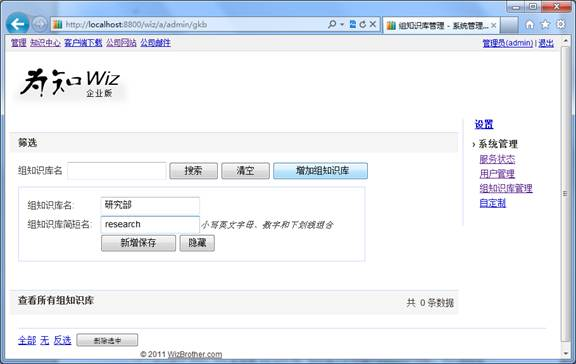
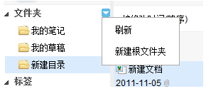
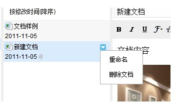
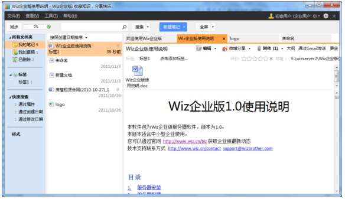
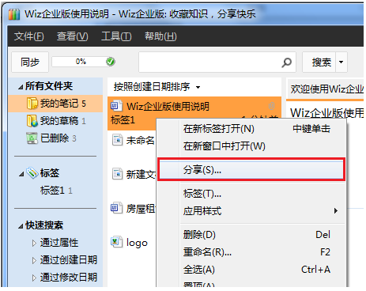
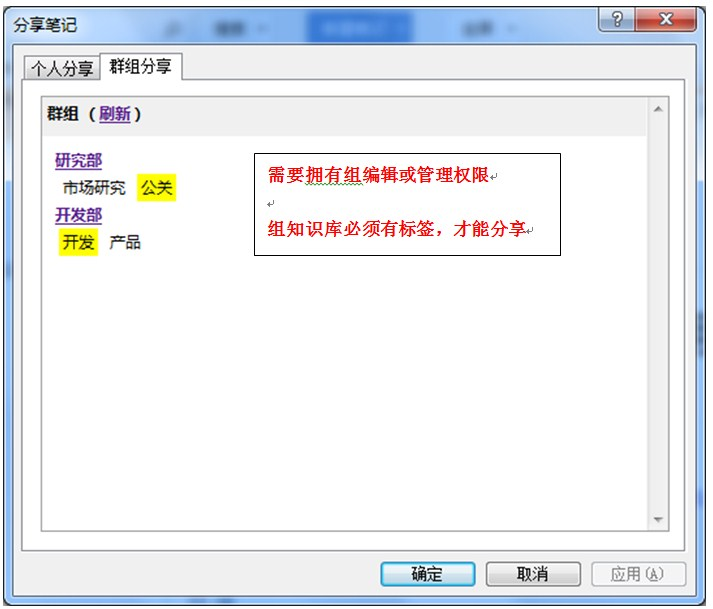
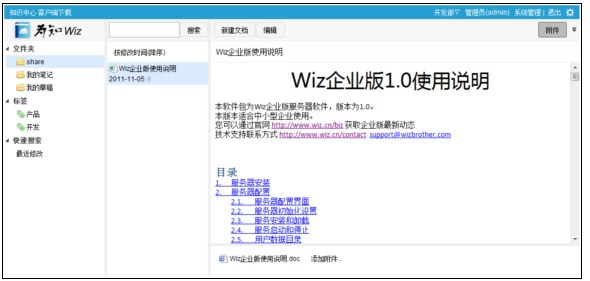

本软件包为Wiz企业版服务器软件，版本为2.0。
本版本适合中小型企业使用。
您可以通过官网 http://www.wiz.cn/biz 获取企业版最新动态
技术支持联系方式 http://www.wiz.cn/contact support@wizbrother.com
运行要求
绿色安装
执行安装目录下WizServer.exe 即可启动和配置服务器
执行WizServer.exe即可出现下图界面，需管理员权限执行

服务器在使用前，必须初始化；
在修改主机名、端口后，也必须重新初始化；
在wizserver目录移动后，必须重新初始化。
如web访问地址为 http://myserver:8800/
则主机名需要填写 myserver，端口需要填写8800，若默认http://myserver访问，则端口需填写为80
服务器地址可以是：
点击设置按钮即可重新设置，并自动安装好服务
注意：在无指导的情况下，请勿随意修改WizServer目录下的默认配置文件
服务器初始化后，会自动安装服务。
WizServer的服务为标准的Windows服务，会随着windows启动而自动启动。
服务名为：Wiz DB Server和Wiz App Server
安装完成后在windows服务管理中，可以看到以下记录

如果安装后，日志显示区提示安装错误，需要特别处理
常见错误有：
当服务安装成功后，可通过WizServer界面上的“启动/停止”按钮启动或停止服务器。也可以通过Windows的服务管理控制。
默认用户数据目录在WizServer安装路径下，主要包括
如需修改为其他目录，请在技术服务人员指导下进行。
根据设置的服务器地址，通过浏览器访问
默认为http://localhost:8800
正常运行将会显示下图所示网页
自动进入知识门户，当无组知识库时，将会显示如下界面

点击管理，进入后台管理

使用默认管理员帐号登录
默认管理员帐号为：admin 密码为：wizadmin
登录后，点击服务器管理，可看到如下服务器状态界面：

试用版用户数限制在20人
点击用户管理，可查看用户列表属性，可进行用户删除、重置密码等操作

Wiz2.0企业版增加了组知识库管理，允许多人维护一个组知识库，并通过知识门户主页将组中的内容分享发布出来。
点击管理页面中的“组知识库管理”，会列表当前的组知识库。

新建和管理组知识库
点击“增加组知识库按钮”可以快速新建
组知识库简短名为英文或数字字符串，用做url中优化。
权限管理
通过点击组知识库的权限管理链接，可以看到如下界面

在基础版企业服务器中，将组知识库的访问权限定义为3种
分别可操作范围如下：
企业版2.0使用Web客户端管理组知识库和个人知识库，Windows客户端软件仅提供个人知识库管理，同时提供了分享到组知识库的功能。
登录后，主界面如下：

如果存在一个或多个组知识库的管理权限，在标题栏将会出现组知识库切换栏，通过点击弹出选择菜单，可以切换管理组知识库。
组知识库的管理只提供Web方式管理，Windows客户端不能直接管理和同步组知识库的内容。
在目录区，鼠标悬停后，会出现操作图标，点击后有菜单操作可以进行文件夹操作，如下图
在标签区，鼠标悬停后，会出现操作图标，点击后有菜单操作可以进行标签操作，如下图

注意，组知识库必须有标签，个人知识通过Windows客户端分享到组知识库时，必须选择标签
通过点击“新建文档”按钮，可以在当前选择的文件夹下创建文档。
通过文档操作菜单，可以进行文档的重命名和删除操作。如下图
通过拖动文件到文件夹，可以实现文档移动。
通过拖动文档到标签，可以实现文档打标签操作
操作按钮区，可以实现文档检索、新建修改文档，和查看附件、查看标签栏的操作
点击新建和编辑按钮，阅读区会变成可编辑状态，可进行富文档操作，如下图

点击附件按钮，可显示附件操作区，通过点击“添加附件”按钮，可以上传附件。
在Web客户端可以对私人知识库和组知识进行快速管理。
为方便快速的导入文档和收藏网页操作，Wiz企业版提供了强大的Windows客户端。
连接企业内网服务器，需使用专用的客户端。
请在企业服务器web上下载使用，下载地址为：
http://<host>:<port>/api/download/
默认为：http://localhost:8800/api/download/
点击下载即可，执行压缩包中wiz-setup-x86-oem.exe
安装时，请注意：wiz-setup-x86-oem.exe目录下，必须有正确的oem.ini才能安装。
安装完成后，使用帐号与个人版有所不同，


客户端的使用，请参见客户端使用手册：http://www.wiz.cn/manual/
变更服务器地址后，需重新配置服务器。
各客户端可重新下载安装，也可以手动修改客户端安装目录下的 oem.ini
修改对应的服务地址和端口即可。

通过文档右键菜单，可以分享文档到组知识库
分享选项如下图
选择标签后，将快速分享到不同组的标签下。
在Web客户端上，可以管理已分享的内容
Windows客户端快速导入的文档，为构建组知识库提供丰富的知识来源。组知识可通过知识门户发布。